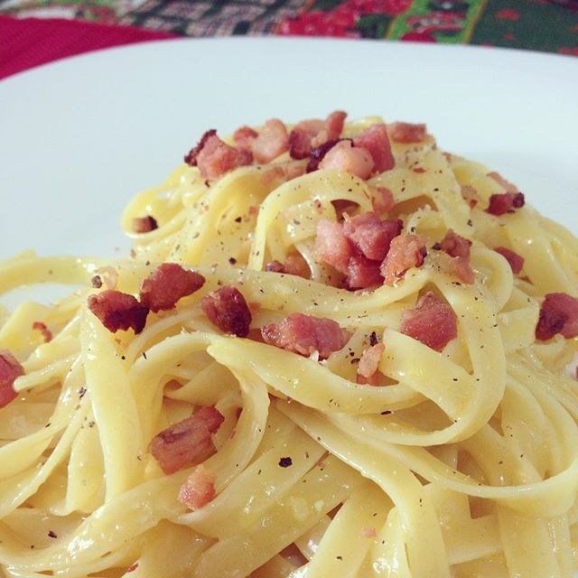

Fettuccini Carbonara Recipe

Fettuccine alla carbonara
This carbonara is a delectable, mouth watering pile of yummy goodness. I recommend a nice salad with it - that's all you will need for a complete meal.
Ingredients
- 5 teaspoons olive oil
- 4 shallots, diced
- 1 large onion, cut into thin strips
- 1 pound bacon, cut into strips
- 1 clove garlic, chopped
- 1 (16 ounce) package fettuccini pasta
- 3 egg yolks
- ½ cup heavy cream
- ¾ cup shredded Parmesan cheese
- salt and pepper to taste
Steps
- Heat olive oil in a large heavy saucepan over medium heat. Saute shallots until softened. Stir in onion and bacon, and cook until bacon is evenly browned. Stir in garlic when bacon is about half done. Remove from heat.
- Bring a large pot of lightly salted water to a boil. Add pasta and cook for 8 to 10 minutes or until al dente. Drain pasta, then return it to the pot.
- In a medium bowl, whisk together egg yolks, cream, and shredded Parmesan. Pour the bacon mixture over the pasta, then stir in the cream mixture. Season with salt and pepper.